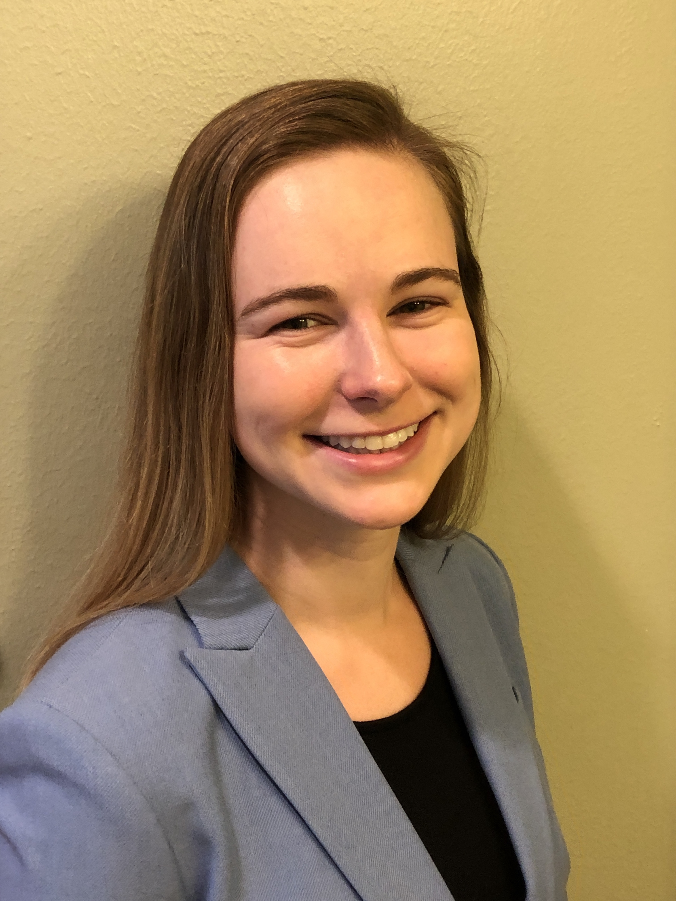

ABOUT ME
I am a young professional beginning my career as a Cyber Software Engineer at Lockheed Martin Aeronautis in Fort Worth, Texas. I recently graduated from Washington University in St. Louis in December 2021, with a major in Computer Science and a minor in Arabic. I am passionate about working or a national defense-related company or agency so I can give back to the country that has given me so much. I am particularly interested in the aerospace, cybersecurity, and intelligence industries.
I am a proud Texan. I grew up in Winston-Salem, North Carolina, and I hope to return to that part of the country. In my free time, I enjoy spending time with my family and friends, exercising, and reading. Here are some of my recent favorite books:


TALK ABOUT MY INTERNSHIP!
One of the highlights of my college career has been my study abroad experience in Meknes, Morocco. The summer after my first year of college, I spent eight weeks living with a host family and taking four hours of Arabic language courses a day. My Arabic skills were put to the test on a daily basis, from communicating basic needs with my host family to navigating around the country. This summer course allowed me to advance a year in my language studies.
Another highlight was the Bataan Memorial Death March. My team and I rucked a marathon, each carrying 35 pounds. It was encouraging to be surrounded by like-minded people.